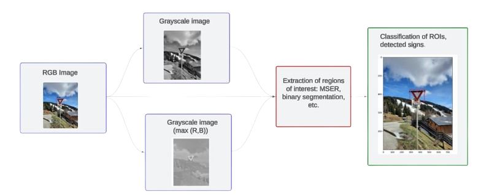

Duration
February 2024 - July 2024
Location
Université de Technologie de Compiègne
Description
This project focused on developing an efficient system for automatic traffic sign detection, combining classical computer vision methods with machine learning techniques. The team successfully created a robust algorithm capable of identifying various types of road signs and traffic lights. The approach involved innovative data preprocessing, expanding the initial dataset from 800 to 2300 signs through clever augmentation techniques. For classification, the team utilized Histogram of Oriented Gradients (HOG) features, achieving high accuracy with SVM classifiers. The detection phase combined the MSER algorithm with a custom binary processing method, resulting in effective sign localization.
Results were impressive, with the system achieving up to 94.49% precision at a high confidence threshold. Notably, the algorithm demonstrated near real-time processing capabilities, analyzing about one image per second even on low-power hardware. This performance suggests potential applications in embedded systems and mobile devices. The project stood out, earning the highest marks in the course. While excelling in many areas, the team identified opportunities for future improvements, particularly in traffic light detection and performance under high-brightness conditions. Overall, this project showcased a successful fusion of classical computer vision and machine learning approaches, resulting in a robust and efficient traffic sign detection system with real-world potential.